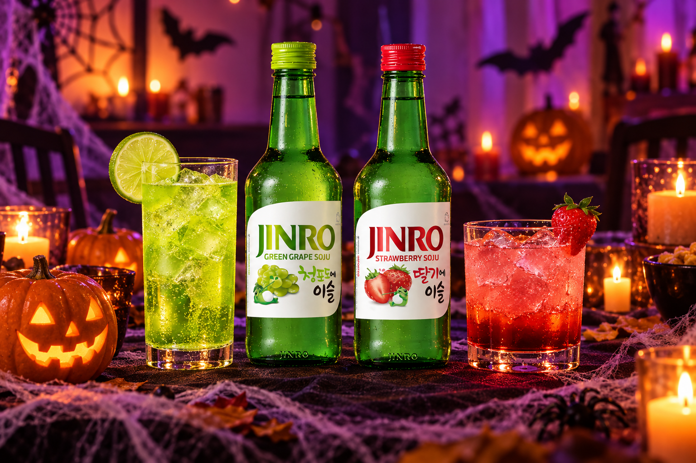
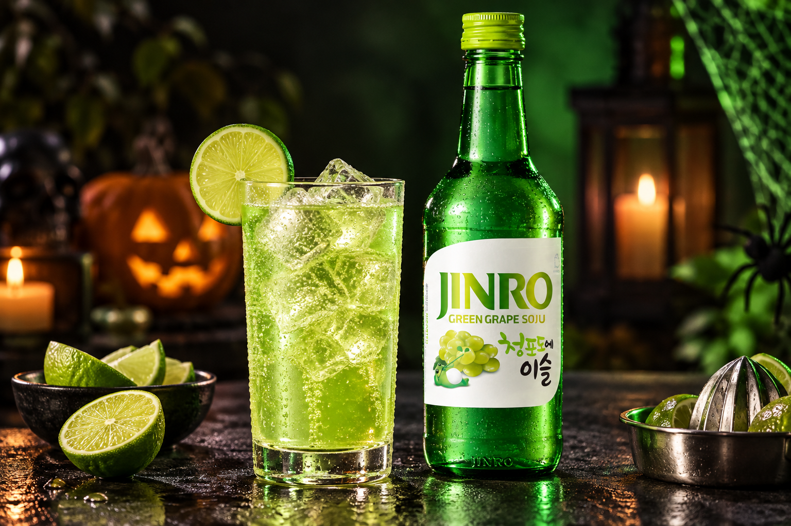
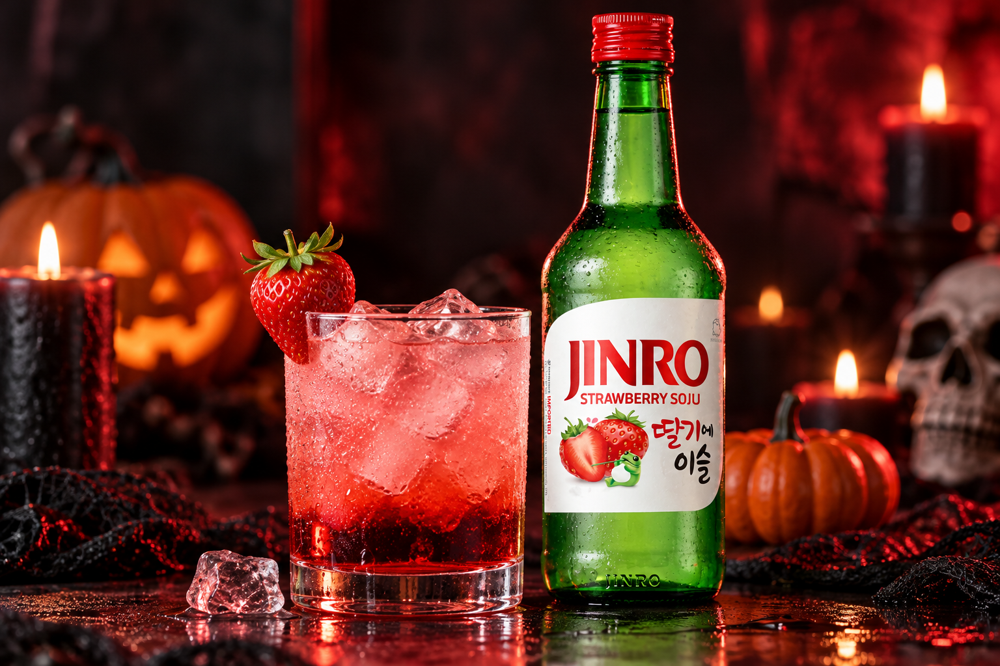

Choose Your Color: Two Halloween Drinks with JINRO
Monster Green with JINRO Green Grape or Blood Red with JINRO Strawberry. Pick your color and follow the simple recipe for each glass.
Halloween is all about the look: the costume, the makeup and the group photo. This year, let your drink match the theme, too.
Here are two easy recipes built around color. Monster Green uses JINRO Green Grape, and Blood Red uses JINRO Strawberry. Each takes only a few ingredients and a couple of minutes.

Pick Your Color
Dressing up as a zombie, a witch or Frankenstein’s monster? Monster Green fits right in. Going as a vampire or something a little scarier? Blood Red is your glass.
Hosting a party? Make both and let your guests pick a side.
Monster Green with JINRO Green Grape
Bright green and fizzy, this one looks like it came straight out of a mad scientist’s lab. Green grape and lime keep the flavor fresh and light.
Ingredients
- 60 ml JINRO Green Grape
- 15 ml lime juice
- 60 ml lemon-lime soda
- Ice
- Lime slice, for garnish
How to make it
- Fill a glass with ice.
- Add JINRO Green Grape, lime juice and lemon-lime soda.
- Stir gently and garnish with a lime slice.

Blood Red with JINRO Strawberry
This one is all about the pour. Grenadine sinks to the bottom of the glass, leaving a deep red layer under the strawberry pink.
Ingredients
- 60 ml JINRO Strawberry
- 60 ml cranberry juice
- 10 ml grenadine
- Ice
- Fresh strawberry, for garnish
How to make it
- Fill a glass with ice and add JINRO Strawberry and cranberry juice.
- Slowly pour the grenadine down the side of the glass so it settles at the bottom.
- Garnish with a fresh strawberry.

Tips for Your Halloween Party
Slice the limes and strawberries before guests arrive, and keep JINRO chilled so each glass comes together quickly.
Want a better photo? Place the two glasses side by side against a dark background. The green and red stand out even more next to each other.
Whichever color you choose, enjoy it responsibly and have a safe Halloween.
For more JINRO drink ideas, visit JINRO Global’s official Instagram, Facebook, and YouTube.
This article is intended for readers of legal drinking age. Please enjoy JINRO responsibly and in moderation, and never drink and drive.